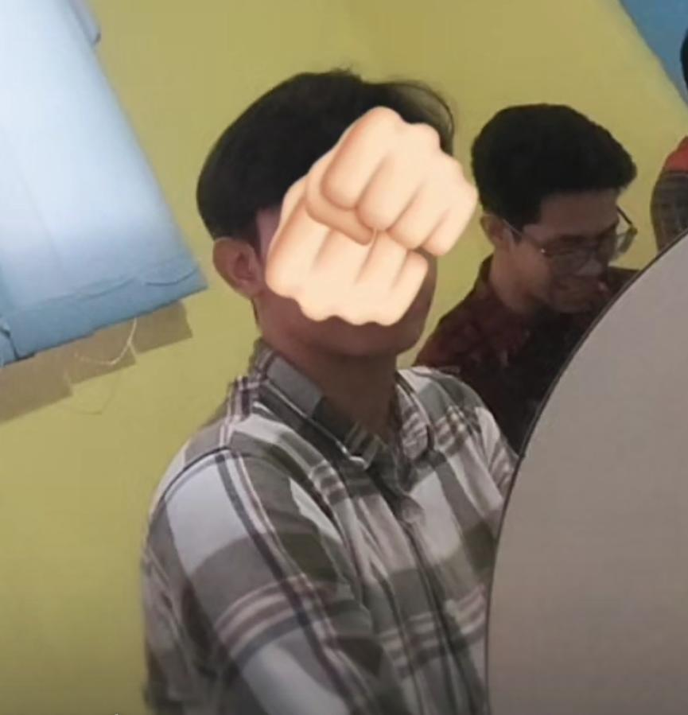

pawas nyoba buat struktur html disini • Klub didirikan pada tahun 1878 oleh para pekerja perusahaan perkeretaapian Lancashire and Yorkshire Railway. • Nama klub berubah menjadi Manchester United pada tahun 1902 setelah sempat menghadapi masalah keuangan. • Pada tahun 1910, klub resmi pindah ke stadion kandang mereka, Old Trafford.
irfan hakim ramadhan ruumah di rawamangun
bagoy